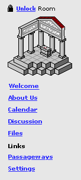

Links available within a room
The owner of a room can add URLs to that room. [1] The list of URLs that an
owner has added is available under the Links link in the left menu bar of each
room, as shown below. Links are associated with a room, and can be added every
room type (individual rooms, group rooms, and course rooms). Any visitor with
access to a room can access the URLs in that room.
By clicking on Links, a visitor will see a list of URLs in that room
[1], each with an (optional) annotation [2] added by the room owner. URLs in
a room are in a flat list only; hierarchies/folders of URLs [3] are not supported
in version 1.0.
Links in of a room can also be "featured". Featured links are highlighted
and appear on the Featured Items list on the Welcome page. [2]
If a user clicks a URL, it will pop up in a new browser window. [1]
|  |
Links available from this room
 = Featured
Item = Featured
Item
|
Editing Links
By default, each room when created will contain one link. This link will lead
to the TAPPED IN Web Site [1]. Only the owner of a room can edit the rooms's
links. The owner of a room can add links to a room, and delete existing links
(including the default TAPPED IN Web Page link). [1]
When the owner of a room clicks on the Link link, they see an interface similar
to what a vistor would see, except they also see delete links beside each URL,
as well as two buttons: Add link [1] and Put checked items in your featured
items [2].
To delete a link, the owner just clicks on the delete link. The owner is presented
with a confirmation message before the deletion is done, for example:
Are you sure you want to delete the Link to the TAPPED In Web Site?
Yes Cancel
If the user selects Cancel the link is not deleted; if the user selects Yes
the link is deleted.
To add a link, the owner clicks the add link button. She is then presented
with a field into which she can type or paste a URL and a title [1], as well
as a comments field where she can add comments about the link [2].
A room owner can contain up to 50 links [2]. When 50 links in a room exist,
the add link button no longer appears. In its place, a message appears that
says:
No more than 50 links can be added to a room.
|
Enter
or paste a URL, a title, and any comments you may have about the site (optional).
|
When the user presses Submit, the link is added to her room's Links area, and
she returns to that area. An anchor tag will automatically be inserted around
the new URL to make it clickable.[1]
Finally, each room has a Featured Items list that can be displayed in a sticky
note in the rooms Welcome page [2]. Items that can be featured include files,
links, and passageways. To add passageways to the Featured Items list, the owner
checks the links she wants to add, and clicks the button put checked items in
your featured items.
Notes
The links that a owner adds to a room also automatically appear under their
Links under Me, organized by the room that the links are in. To edit a link
from Me/Links the owner must go to the room that the link is in and edit
it there. [1]
The number of URLS that an owner can link to in a given room will be set at
50 maximum.[2]
We could do a check on each URL that is entered to verify that the page really
exists or that it is a well-formed URL. For the current release, we will simply
parse [1] the URL that is entered and ensure that the anchor tag includes a
http:// in front of the URL so that is is a well-formed anchor. Later version
may actually do a http request to the url to see if it exists [3]
Hierarchies/folders [3] are not supported in version 1.0.
Rearranging order [3] is not supported in version 1.0. URLs are listed in the
order that they are added.